19 Storage Infrastructure¶
19.1 Doelstellingen¶
Na dit hoofdstuk beheerst de student het volgende:
-
DAS, NAS en SAN beschrijven en hun voor- en nadelen vergelijken;
-
uitleggen hoe iSCSI werkt, met de begrippen initiator, target, LUN, portal en IQN;
-
TrueNAS Community Edition installeren in VMware Workstation, met een apart netwerk voor de opslag;
-
in TrueNAS een pool (mirror) en een zvol aanmaken en het zvol met de wizard als iSCSI-share aanbieden;
-
vanaf RHEL 10 met iscsiadm een target zoeken en erop inloggen;
-
de iSCSI-schijf partitioneren, er een XFS-bestandssysteem op zetten en ze blijvend mounten;
-
de iSCSI-schijf als volume gebruiken in een Podman-container.
19.2 Opslagsystemen¶
SAN (Storage Area Network), DAS (Direct Attached Storage) en NAS (Network Attached Storage) zijn drie veelvoorkomende manieren om opslag in IT-infrastructuren te beheren en te gebruiken. Ze verschillen in hoe ze toegang bieden tot opslagbronnen en in hun typische gebruiksscenario's.
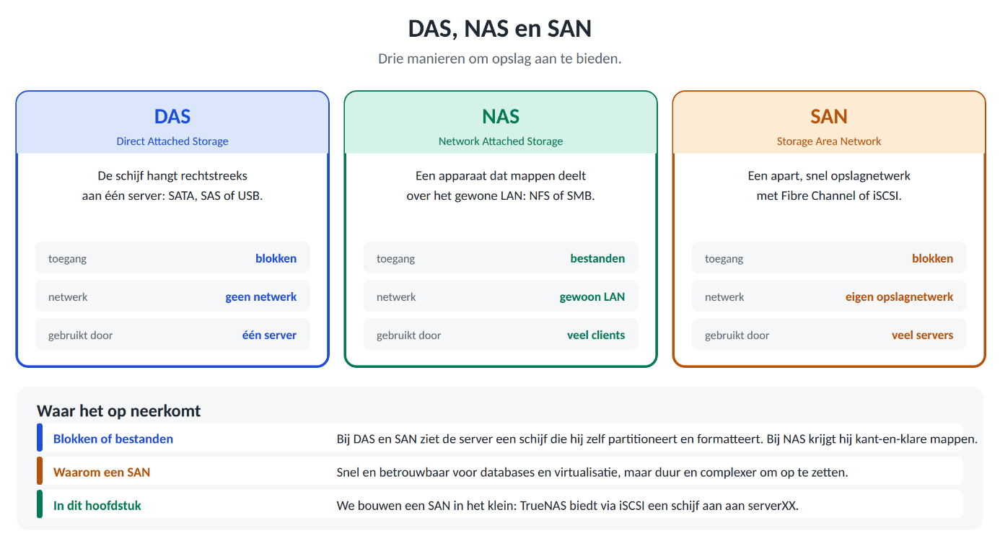
19.2.1 DAS (Direct Attached Storage):¶
DAS is opslag die direct is aangesloten op een server of computer, zonder een netwerk tussen de opslag en de computer. Het is het eenvoudigste type opslag en komt vaak voor in de vorm van interne harde schijven of externe opslag die via interfaces zoals SATA, SAS of USB direct met één computer is verbonden.
Voorbeelden:
Een externe harde schijf die via USB aan een computer is gekoppeld of een RAID-array die in een server is ingebouwd.
Voordelen:
-
Eenvoudig op te zetten en te gebruiken.
-
Lage latency omdat er geen netwerk bij betrokken is.
-
Goedkoop voor kleine opstellingen.
Nadelen:
-
Niet geschikt voor delen van opslag over meerdere computers.
-
Schaalbaarheid is beperkt tot de fysieke capaciteit van de host.
19.2.2 SAN (Storage Area Network):¶
SAN is een speciaal high-performance netwerk dat meerdere servers verbindt met gecentraliseerde, block-level opslag. Het gebruikt vaak gespecialiseerde netwerken zoals Fibre Channel of iSCSI om servers directe toegang te geven tot gedeelde opslag, alsof het een lokale schijf is. SAN's worden vaak gebruikt in datacenters en grote ondernemingen voor veeleisende toepassingen zoals databases en virtualisatie.
Voorbeelden:
Een SAN-oplossing zoals die van Dell EMC, NetApp, of een systeem dat gebruik maakt van Fibre Channel-switches en gedeelde storage arrays.
Voordelen:
-
Hoge prestaties door dedicated opslagnetwerken.
-
Block-level toegang, wat efficiënt is voor virtualisatie en databases.
-
Hoge schaalbaarheid en betrouwbaarheid, geschikt voor enterprise omgevingen.
Nadelen:
-
Complex en duur om op te zetten en te beheren.
-
Vereist vaak gespecialiseerde hardware/software en kennis.
19.2.3 NAS (Network Attached Storage):¶
NAS is een dedicated opslagapparaat dat via een standaard lokaal netwerk (LAN) verbonden is en bestanden deelt met meerdere clients (computers, servers, etc.). Het biedt bestand-gebaseerde toegang tot opslag en werkt meestal via netwerkprotocollen zoals SMB/CIFS (voor Windows), NFS (voor Linux/Unix), en FTP.
Voorbeelden:
Een NAS-apparaat zoals die van merken als Synology, QNAP of een zelfgebouwde NAS-server die via het netwerk wordt gedeeld.
Voordelen:
-
Eenvoudig toegang tot gedeelde opslag voor meerdere apparaten op het netwerk.
-
Goed voor het delen van bestanden binnen een thuis- of bedrijfsomgeving.
-
Gemakkelijk schaalbaar door het toevoegen van schijven of nieuwe NAS-apparaten aan het netwerk.
Nadelen:
-
Prestaties kunnen beperkt worden door netwerksnelheden (zoals de snelheid van je ethernetverbinding).
-
Beperkt tot bestand-gebaseerde toegang, wat minder efficiënt kan zijn voor intensieve toepassingen zoals databases of virtualisatie.
19.3 iSCSI¶
19.3.1 Inleiding¶
We gaan een open source storage-oplossing implementeren met behulp van TrueNAS Community Edition, dat onder de GNU General Public License valt. Deze tool maakt gebruik van het iSCSI-protocol om opslag op een efficiënte manier te delen over een netwerk.
iSCSI gebruikt dezelfde opslagcommando’s als het traditionele SCSI-protocol, maar verstuurt deze via TCP/IP. Hierdoor kunnen opslagbronnen en rekenkracht eenvoudig worden gescheiden en over meerdere locaties worden verspreid. Dit zorgt voor meer flexibiliteit en schaalbaarheid in je IT-infrastructuur.
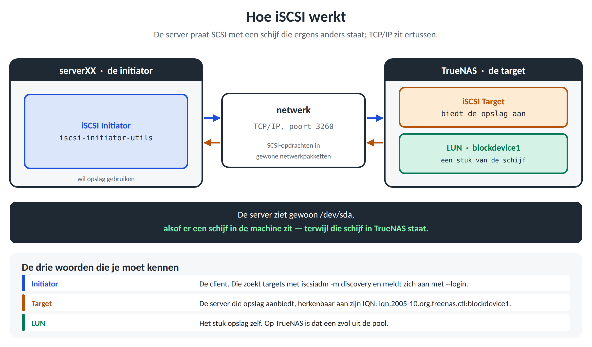
-
Server met iSCSI Initiator Service (links):
-
Dit is de machine (bijvoorbeeld een fysieke server of virtuele machine) die gebruik wil maken van opslag die extern beschikbaar is.
-
Op deze server draait de iSCSI Initiator Service, een softwarecomponent die verantwoordelijk is voor het leggen van de netwerkverbinding met de externe opslag.
-
De initiator stuurt via het netwerk SCSI-opdrachten naar de opslagserver, ook wel de iSCSI Target Service genoemd.
-
-
Netwerk (midden):
-
Tussen de server en de opslag bevindt zich het netwerk, meestal bestaande uit switches en routers.
-
Over dit netwerk worden de data en commando’s verstuurd met het TCP/IP-protocol.
-
De verbinding loopt van de iSCSI initiator op de server naar de iSCSI target op de opslagserver.
-
-
Opslagserver of Appliance (rechts):
-
Deze server bevat de iSCSI Target Service, die de taak heeft om opslagbronnen aan te bieden aan clientmachines (de initiators).
-
De target service ontvangt en verwerkt de SCSI-opdrachten, en vertaalt deze naar acties op de fysieke schijven of andere opslagmedia.
-
-
Disk en LUN (Logical Unit Number):
De fysieke opslag op de opslagserver wordt opgedeeld in logische eenheden, zogenaamde LUN’s.
-
Een LUN is een deel van een fysieke schijf dat als afzonderlijke schijf wordt gepresenteerd aan de initiator.
-
Bijvoorbeeld, een LUN van 100 GB is een specifiek deel van een fysieke schijf dat de server als een zelfstandige opslag ziet.
-
iSCSI Target Service (rechts, in opslagserver):
-
Deze service maakt de LUN’s vrij en beschikbaar aan de initiator.
-
Wanneer de initiator verbinding maakt met de target, gebruikt deze de LUN alsof het een lokale schijf is, ook al bevindt de opslag zich fysiek op een andere locatie.
-
We zullen een iSCSI-target configureren op TrueNAS Community Edition en dat target benaderen vanuit RHEL 10. We zullen daarna met Podman gegevens hierop opslaan.
19.3.2 Toevoegen netwerk voor SAN¶
Een SAN gebruikt een eigen netwerk, los van het gewone LAN. Zo hindert het opslagverkeer het andere verkeer niet, en omgekeerd. We voegen daarom een tweede netwerk toe.
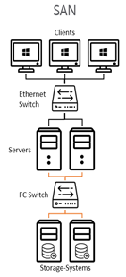
We zullen dit als volgt implementeren.
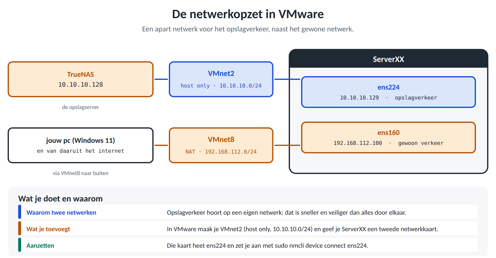
Voeg in VMware via Edit > Virtual Network Editor een netwerk toe: klik op Add Network en kies VMnet2.
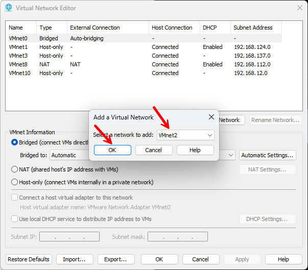
Laat Host-only staan en kies als subnet 10.10.10.0/24.
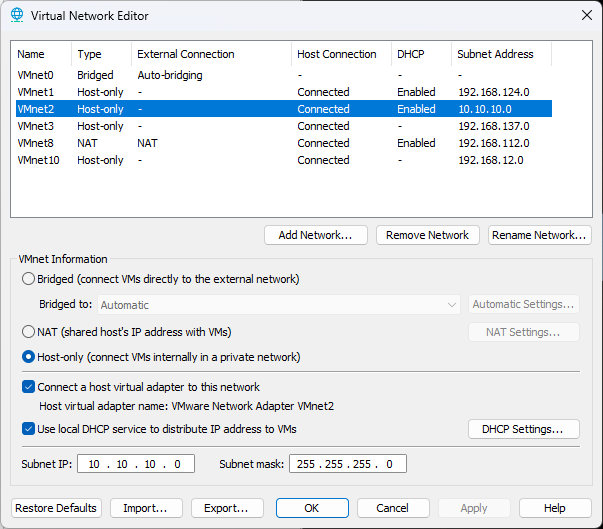
19.3.3 Installatie TrueNAS¶
Ga naar https://www.truenas.com/download-truenas-community-edition/.
Klik rechtsonder op
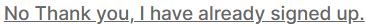
.Klik nu op onderstaande.
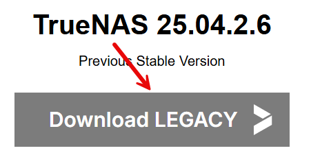
Gebruik niet versie 25.10.0: die heeft een fout bij het herkennen van schijven. Neem 25.10.1 of later.
Open VMware Workstation en klik op “Create a New Virtual Machine”.
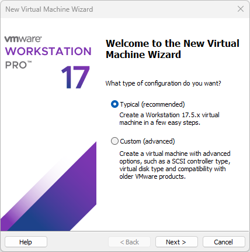
Kies nu voor de Optie “I will install the operating system later”.
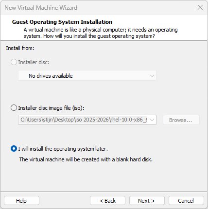
Kies Linux, Debian 12.x 64-bit. TrueNAS is gebaseerd op Debian.
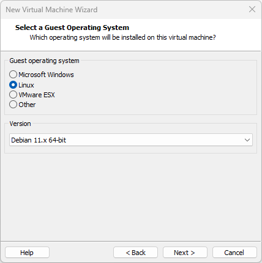
Kies zelf waar je de VM bewaart en noem ze TrueNAS.
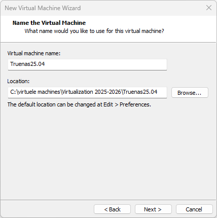
Geef de VM minstens 100 GB schijfruimte.
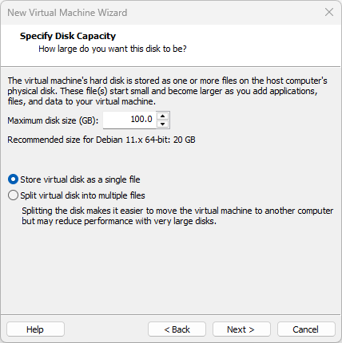
Klik op “Customize Hardware” om de hardware-instellingen te optimaliseren.
-
Geheugen (RAM): 8 GB wordt aangeraden; 4 GB werkt ook voor deze test.
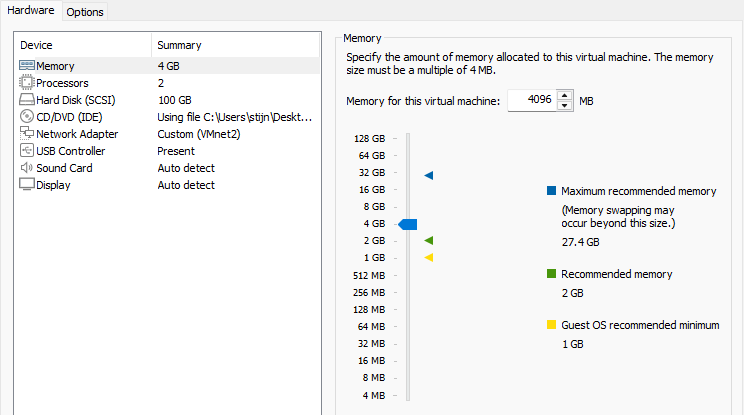
-
Processors: Kies minimaal 2 cores.
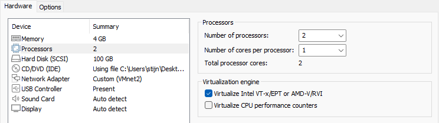
-
CD/DVD (IDE): Selecteer Use ISO image file:. Klik op browse en selecteer de ISO van TrueNAS. Zet zeker vinkje voor Connect at power on.
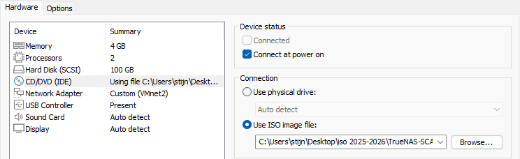
-
Network Adapter: Stel de netwerkadapter in op “Custom (VMnet2)” zodat TrueNAS toegang heeft tot ServerXX.
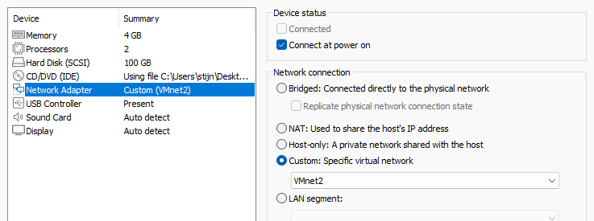
-
Klik Close, Finish.
-
Klik op Edit virtual machine settings.
-
Op het tabblad Options, Advanced kies je bij Firmware type voor UEFI.
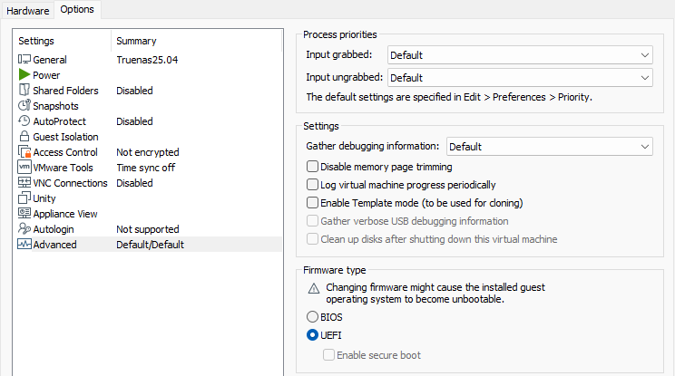
- Klik op OK om de hardwareconfiguratie op te slaan.
Start de VM op. Kies voor Start TrueNAS Installation en druk <Enter>.
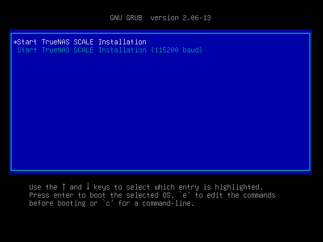
Kies in onderstaand venster voor 1 en druk <Enter>.
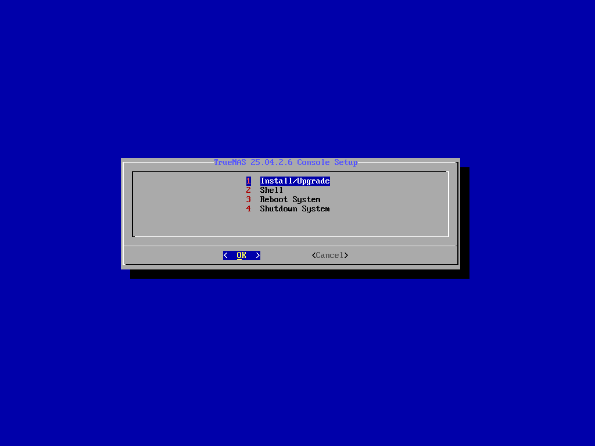
Selecteer met de spatiebalk de virtuele schijf waarop TrueNAS geïnstalleerd wordt, en bevestig met Enter.
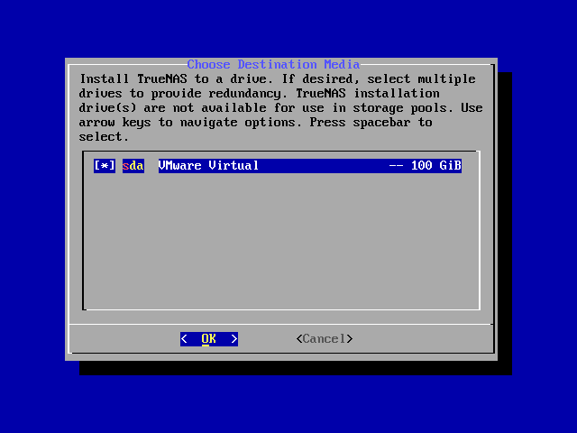
Je krijgt een melding dat alle partities op sda verwijderd worden. Druk op Enter.
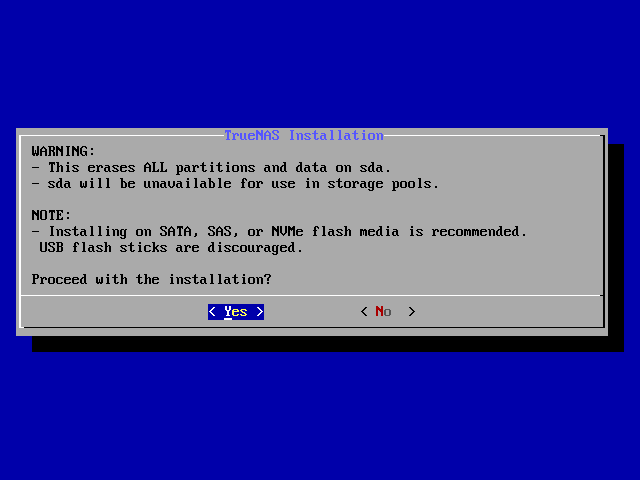
Kies bij Authentication Method voor 2 en druk <Enter>.
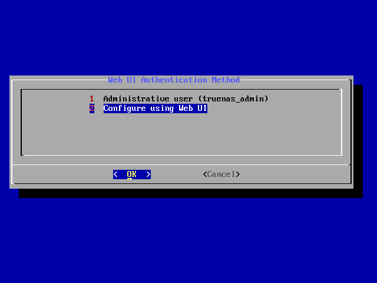
De installatie gaat nu van start.
Klik na de installatie op OK.
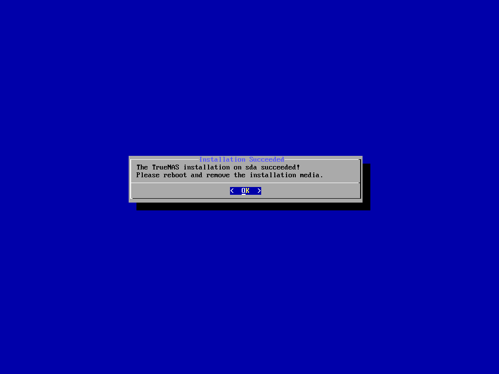
Kies 4 (Shutdown System) en druk op Enter.
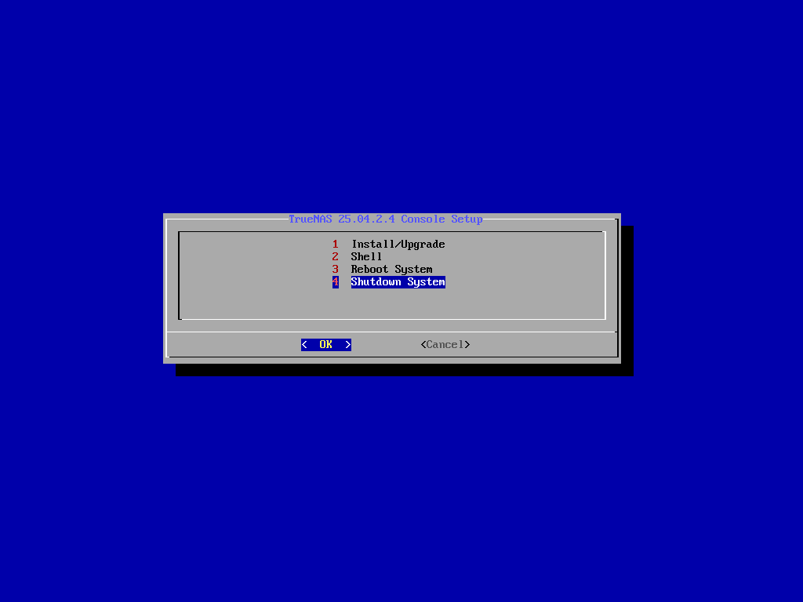
Koppel nu de virtuele cd/dvd los. Je hebt ze niet meer nodig, en je wil er niet meer van opstarten.
Ga naar virtual machine settings en selecteer links CD/DVD (IDE).
Verwijder het vinkje voor “Connect at power on”.
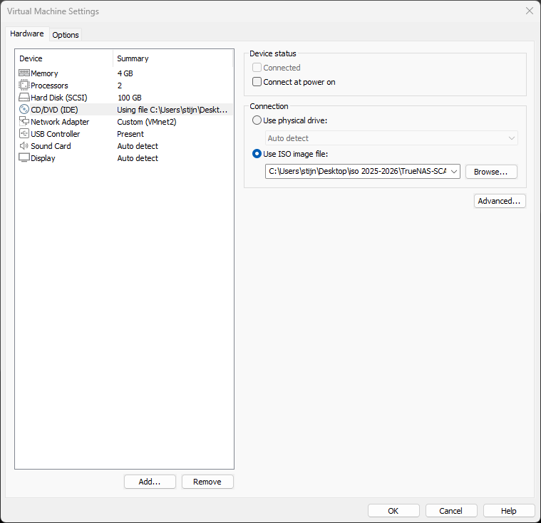
Voeg ook twee SCSI-schijven van 200 GB toe met Add. Daarop komt straks de opslagpool.
Uiteindelijk krijg je volgende instellingen.
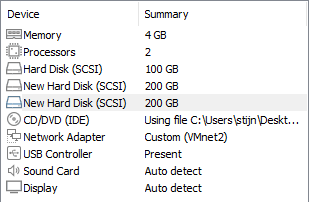
Start TrueNAS op.
TrueNAS krijgt nu een IP-adres via DHCP van VMnet2.
Noteer het IP-adres dat de console van TrueNAS toont.
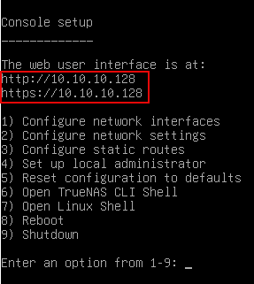
Voeg een tweede netwerkkaart toe aan ServerXX: VM > Settings > Add... > Network Adapter > Finish.
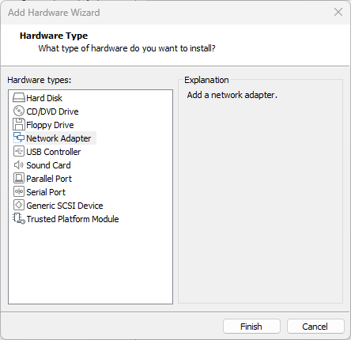
Koppel die netwerkkaart aan VMnet2.
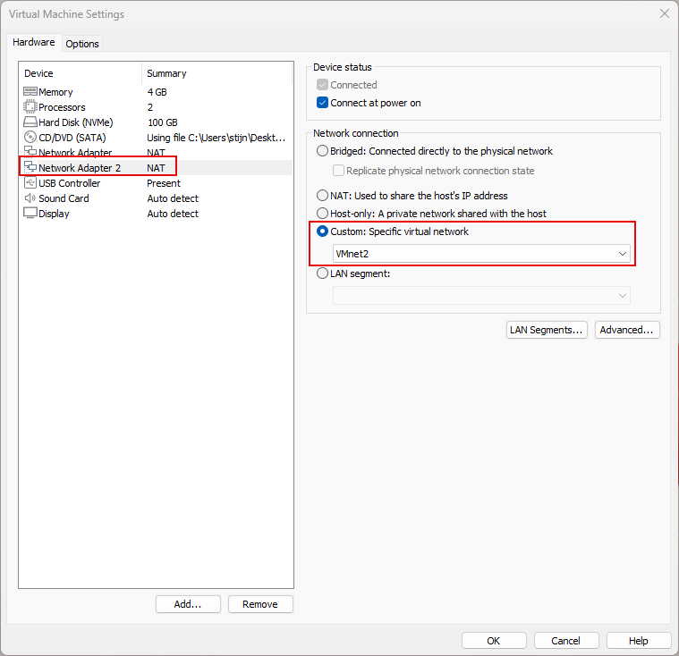
Verbind op ServerXX de tweede netwerkkaart:
student@serverXX:~$ nmcli
…
ens224: niet verbonden
"VMware VMXNET3"
ethernet (vmxnet3), 00:0C:29:99:B5:46, hw, mtu 1500
…
Verbind de netwerkkaart ens224:
student@serverXX:~$ sudo nmcli device connect ens224
Vraag de IP-gegevens van ens224 op:
student@serverXX:~$ nmcli device show ens224 | grep IP4
IP4.ADDRESS[1]: 10.10.10.129/24
IP4.GATEWAY: --
IP4.ROUTE[1]: dst = 10.10.10.0/24, nh = 0.0.0.0, mt = 101
IP4.DNS[1]: 10.10.10.1
IP4.DOMAIN[1]: localdomain
Open een browser op ServerXX, of op je laptop als die een virtuele netwerkkaart op VMnet2 heeft. Surf naar het IP-adres van TrueNAS, hier 10.10.10.128.
Stel een wachtwoord in voor de gebruiker truenas_admin en klik op Aanmelden. In deze testomgeving kiezen we 123; in productie gebruik je uiteraard een sterk wachtwoord.
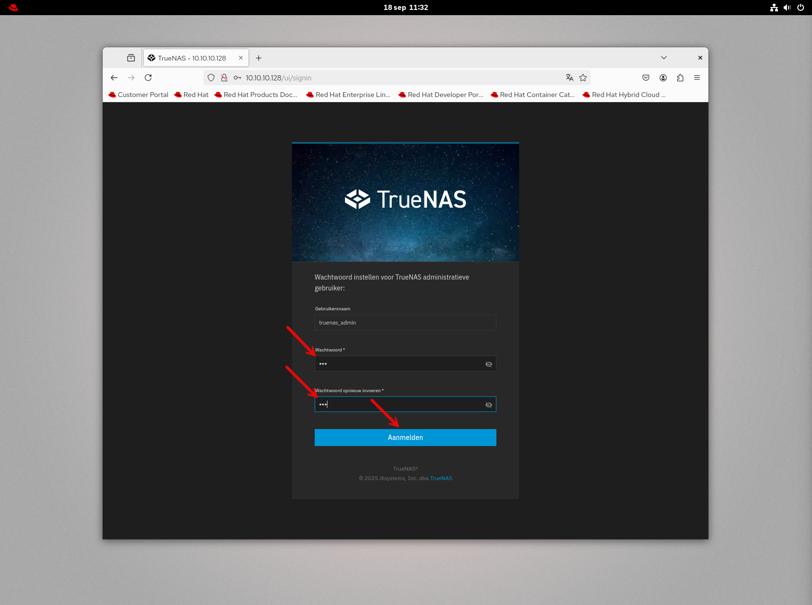
Je krijgt onderstaand dashboard.
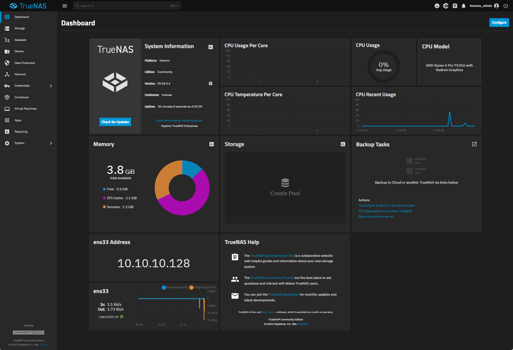
19.3.4 iSCSI instellen¶
19.3.4.1 Opslagpool aanmaken¶
Voordat je een iSCSI-opslagbron kunt configureren, moet je een opslagpool aanmaken.
-
Ga naar Opslagdashboard en klik op Pool aanmaken.
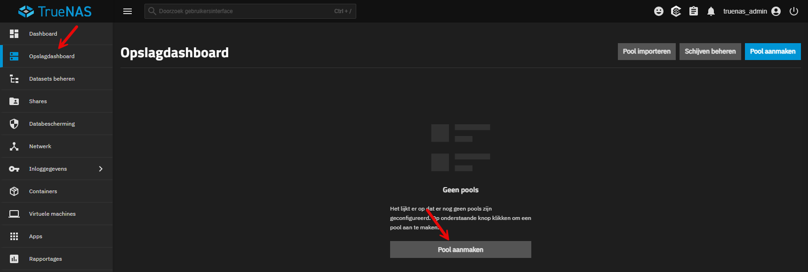
-
Klik op Pool aanmaken
-
Je ziet dat er een probleem is…
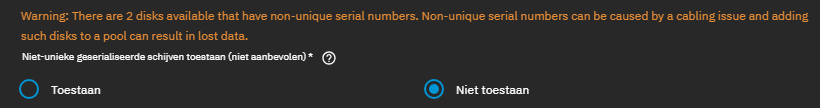
Dit moet je aanpassen in VMware zelf.
Sluit TrueNAS daarvoor eerst af.
Opgelet: gebruik Chrome of een andere moderne browser… Anders zie je niet alles goed gepositioneerd op het scherm.
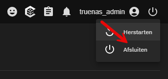
Je moet een reden opgeven… Kies voor hardware wijzigen.
Zet een vinkje voor Bevestigen en kies voor Afsluiten.
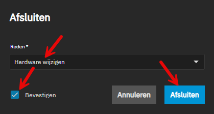
Ga op zoek naar het .vmx-bestand van TrueNAS op je host.
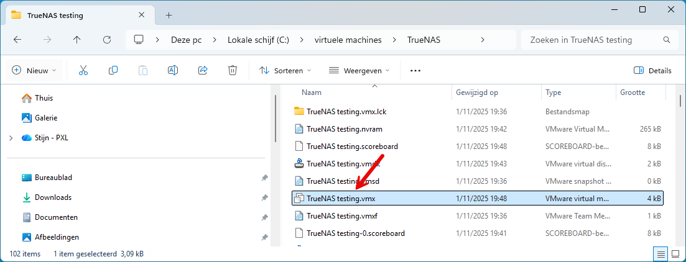
Voeg volgende regel toe met de kladblok of een andere teksteditor.
disk.EnableUUID = "true"
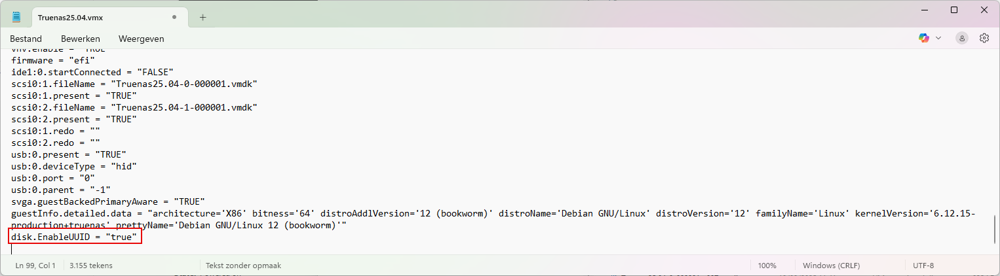
Start de VM terug op.
Ga terug naar Storage, Create Pool. Nu verschijnt er geen foutmelding meer.
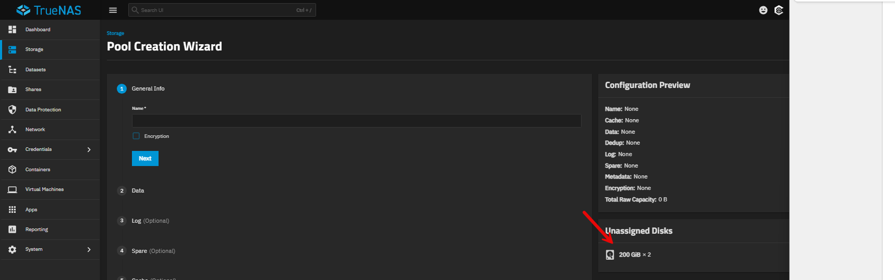
Typ voor de naam Pool1. Je kan encryptie instellen op poolniveau, wat in de praktijk inhoudt dat de root-dataset (en alle nieuwe datasets/volumes die erin aangemaakt worden) automatisch encryptie gebruiken.
Klik Next.
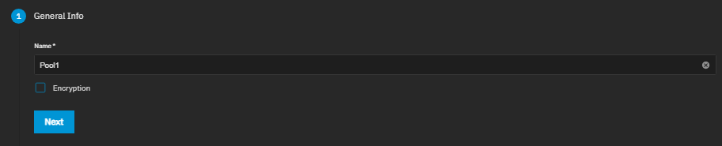
Je bepaalt nu hoe de schijven samenwerken: hoeveel ruimte, hoeveel snelheid en hoeveel redundantie.
Je ziet hier veel mogelijkheden:
-
Stripe
Combineert alle disks tot één grote, snelle opslag. Géén redundantie: als één disk uitvalt, verlies je alles.
Voordeel: snel, hele opslagruimte bruikbaar.
Nadeel: geen bescherming tegen uitval. -
Mirror
Elk blok data wordt naar twee (of meer) disks tegelijk geschreven. Als één disk uitvalt, blijft je data intact.
Voordeel: hoge veiligheid, eenvoudige recovery.
Nadeel: de helft (bij 2 disks) van je opslag verlies je aan "spiegeling". -
RAIDZ1
Vergelijkbaar met RAID5: één disk mag uitvallen zonder dataverlies. Data en pariteitsinformatie worden verspreid.
Voordeel: iets meer capaciteit over dan mirror, basisbescherming.
Nadeel: trager bij kleine schrijfacties, maar er blijven risico’s als er twee disks tegelijk falen. -
RAIDZ2
Vergelijkbaar met RAID6: twee disks mogen tegelijk falen.
Voordeel: veel veiligere bescherming dan RAIDZ1.
Nadeel: iets minder bruikbare capaciteit, nog iets trager. -
RAIDZ3
Drie disks mogen tegelijk falen.
Voordeel: maximale bescherming.
Nadeel: meeste capaciteit kwijt, prestaties vooral bij kleine IO lager. -
dRAID1, dRAID2, dRAID3
Dit zijn gedistribueerde RAID-varianten, nieuw in recentere ZFS/TrueNAS versies, geoptimaliseerd voor zeer grote aantallen drives.
Voordeel: Sneller rebuild bij uitval, geschikt voor grote installaties.
Nadeel: Complexer, vaak alleen relevant bij tientallen schijven.
Wij kiezen Mirror: met twee schijven mag er één uitvallen.
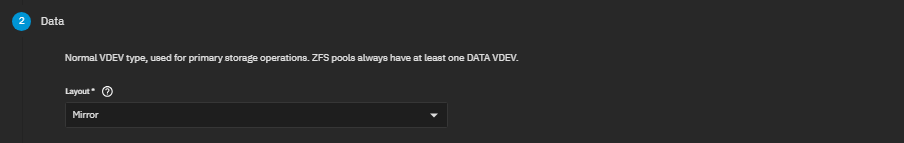
De schijven zijn al geselecteerd.
Kies voor Save And Go To Review (de andere instellingen zijn optioneel).
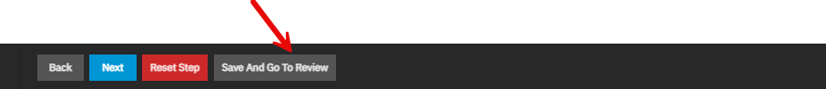
Klik erna op Create Pool.
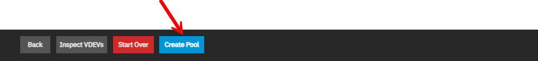
Je krijgt de melding dat de contents van de toegevoegde schijven zal worden verwijderd. Bevestig dit en klik op Create Pool.
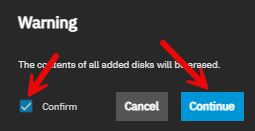
De pool wordt nu aangemaakt.
Je krijgt nu een overzicht van de Storage.
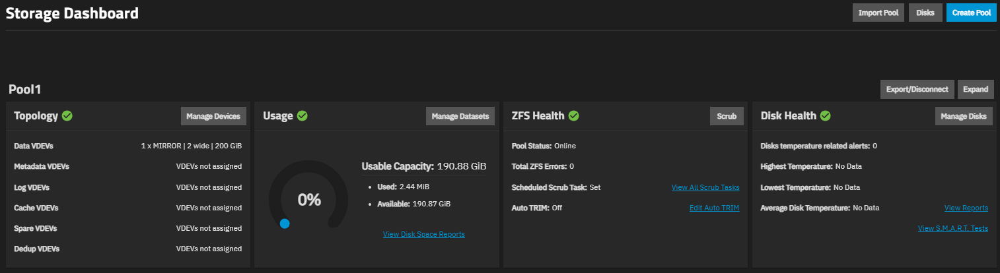
19.3.4.2 Zvol aanmaken¶
Een Zvol (ZFS virtual volume) is een virtual block device, vergelijkbaar met een fysieke harde schijf of SSD, maar dan virtueel en binnen je bestaande storage pool.
Een Zvol (ZFS-volume) is dan ook nodig om opslagruimte te reserveren voor iSCSI.
-
Ga naar Datasets aan de linkerkant.
-
Selecteer Pool1.
-
Klik rechtsboven op Add Zvol
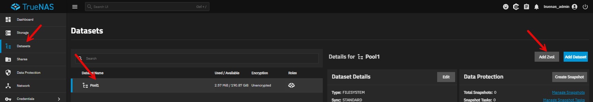
- Geef het Zvol de naam opslag1 en stel een grootte van 50GiB in. Deze grootte zal het beschikbare iSCSI-opslagvolume bepalen. Bij compression level kiezen we voor Off. Laat de overige instellingen staan.
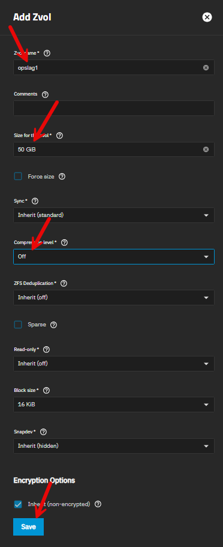
- Klik op Save om het Zvol aan te maken.
Je ziet nu opslag1 in Pool1 staan.
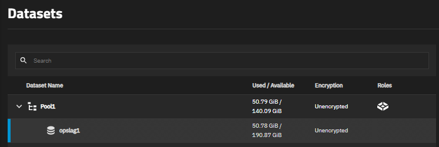
19.3.4.3 iSCSI-service activeren¶
Voordat je verder kunt met het configureren van iSCSI, moet de service worden geactiveerd.
Ga naar Shares in het hoofdmenu. Je ziet hier dat je naast de SMB en NFS-shares service ook block (iSCSI)-service kan activeren.
Klik rechtsboven op de 3 puntjes bij Block (iSCSI) Shares Targets en kies voor Turn On Service.
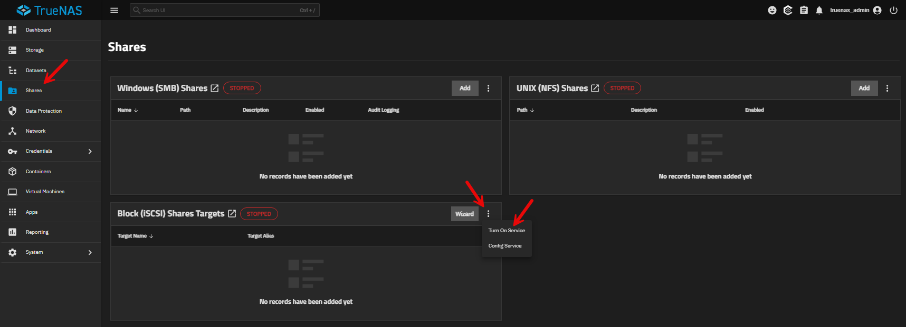
Als je wil dat iSCSI telkens bij het opstarten geactiveerd wordt ga je naar System aan de linkerkant, Services.
Zet de schakelaar aan bij “Start Automatically”.
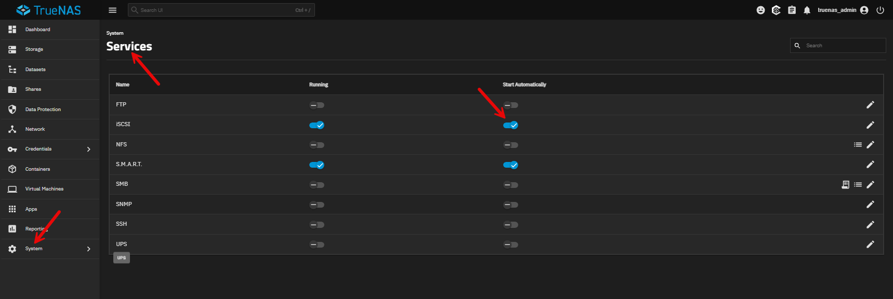
19.3.4.4 iSCSI configuratie¶
Ga terug naar Shares aan de linkerkant.
Op dit moment heb je nog geen target/extents aangemaakt. Je ziet: "No records have been added yet".
Je zvol opslag1 is dus nog niet gekoppeld aan de iSCSI-service.
TrueNAS heeft een ingebouwde wizard die je door het configureren van een iSCSI-share leidt.
Na het klikken kies je bij Target voor Create New en Next.
Bij Extent kiezen we de naam blockdevice1. Bij extent type laat je Device staan. Bij device kies je uiteraard voor Pool1/opslag1(50GiB). De overige instellingen laat je staan en klik op Next.
In de volgende stap configureer je de Protocol options.
We kiezen het pijltje naar beneden en kiezen voor Create New bij Portal. Een portal is de combinatie van IP-adres + poort (standaard 3260) waarop TrueNAS iSCSI aanbiedt.
We hebben nog geen vast IP-adres ingesteld. Kies daarom 0.0.0.0 bij IP Address: TrueNAS luistert dan op al zijn IP-adressen.
In deze stap configureer je ook welke initiators (iSCSI-clients) toegang hebben tot het iSCSI-doel.
Initiators: laat je het veld leeg, dan krijgen alle iSCSI-clients toegang. Wij doen dat. Anders vul je de IQN's van de toegelaten initiators in, één per regel.
Klik op Save.
Je kan de instellingen wijzigen of het overzicht opvragen als je op het potloodje klikt bij blockdevice1.
We veranderen niets en klikken rechtsboven op het kruisje.
19.3.5 Verbinding maken met iSCSI-target op ServerXX¶
Installeer eerst de iSCSI-initiatortools.
student@serverXX:~$ sudo dnf install -y iscsi-initiator-utils
Start de iSCSI-service:
student@serverXX:~$ sudo systemctl enable --now iscsid
Created symlink '/etc/systemd/system/multi-user.target.wants/iscsid.service' → '/usr/lib/systemd/system/iscsid.service'.
Zoek naar targets op het IP-adres van TrueNAS:
student@serverXX:~$ sudo iscsiadm -m discovery -t sendtargets -p 10.10.10.128
10.10.10.128:3260,1 iqn.2005-10.org.freenas.ctl:blockdevice1
Er is één target gevonden.
Log in op de target met zijn IQN (iSCSI Qualified Name), de naam uit de vorige uitvoer:
student@serverXX:~$ sudo iscsiadm -m node -T iqn.2005-10.org.freenas.ctl:blockdevice1 -p 10.10.10.128 --login
Logging in to [iface: default, target: iqn.2005-10.org.freenas.ctl:blockdevice1, portal: 10.10.10.128,3260]
Login to [iface: default, target: iqn.2005-10.org.freenas.ctl:blockdevice1, portal: 10.10.10.128,3260] successful.
Controleer of de node opgeslagen is:
student@serverXX:~$ sudo iscsiadm -m node
10.10.10.128:3260,1 iqn.2005-10.org.freenas.ctl:blockdevice1
19.3.6 Initialiseren en formatteren van het doel¶
Controleer of de schijf zichtbaar is:
student@serverXX:~$ lsblk
NAME MAJ:MIN RM SIZE RO TYPE MOUNTPOINTS
sda 8:0 0 50G 0 disk
sr0 11:0 1 816,4M 0 rom /run/media/student/RHEL-10-0-BaseOS-x86_64
nvme0n1 259:0 0 100G 0 disk
├─nvme0n1p1 259:1 0 600M 0 part /boot/efi
├─nvme0n1p2 259:2 0 1G 0 part /boot
└─nvme0n1p3 259:3 0 98,4G 0 part
├─rhel-root 253:0 0 64,8G 0 lvm /
├─rhel-swap 253:1 0 2G 0 lvm [SWAP]
└─rhel-home 253:2 0 31,6G 0 lvm /home
De iSCSI-schijf is sda, met een grootte van 50 GB.
Maak er één partitie op met fdisk. Controleer eerst goed welke schijf de iSCSI-schijf is: kies je de verkeerde, dan wis je je eigen systeem.
student@serverXX:~$ sudo fdisk /dev/sda
Command (m for help): n
Select (default p): <Enter>
Partition number (1-4, default 1): <Enter>
First sector (16384-104857631, default 16384): <Enter>
Last sector, +/-sectors or +/-size{K,M,G,T,P} (16384-104857631, default 104857631): <Enter>
Command (m for help): w
Controleer met lsblk of de partitie er is:
student@serverXX:~$ lsblk
NAME MAJ:MIN RM SIZE RO TYPE MOUNTPOINTS
sda 8:0 0 50G 0 disk
└─sda1 8:1 0 50G 0 part
…
Maak een XFS-bestandssysteem op de partitie:
student@serverXX:~$ sudo mkfs.xfs /dev/sda1
…
Discarding blocks...Done.
Maak een mountpoint en mount de partitie:
student@serverXX:~$ sudo mkdir /mnt/iscsi
student@serverXX:~$ sudo mount /dev/sda1 /mnt/iscsi
Deze mount verdwijnt bij een herstart. Maak hem blijvend in /etc/fstab. Gebruik de UUID van de partitie, want de naam sda kan bij een herstart veranderen. Zoek de UUID op:
student@serverXX:~$ sudo blkid /dev/sda1
Voeg deze regel toe aan /etc/fstab, met jouw UUID. De optie _netdev zegt dat het om een netwerkschijf gaat: systemd mount ze pas als het netwerk werkt.
UUID=<uuid-van-sda1> /mnt/iscsi xfs _netdev 0 0
Laat RHEL bij het opstarten ook automatisch inloggen op de target, en test de fstab-regel:
student@serverXX:~$ sudo systemctl enable iscsi
student@serverXX:~$ sudo systemctl daemon-reload
student@serverXX:~$ sudo umount /mnt/iscsi
student@serverXX:~$ sudo mount -a
19.3.7 Podman met iSCSI¶
Een Podman-container gebruikt de iSCSI-schijf gewoon als map.
Maak student eigenaar van /mnt/iscsi:
student@serverXX:~$ sudo chown student:student /mnt/iscsi/
Vraag de vrije ruimte van /mnt/iscsi op:
student@serverXX:~$ df /mnt/iscsi/
Bestandssysteem 1K-blokken Gebruikt Beschikbaar Geb% Aangekoppeld op
/dev/sda1 52355088 1035568 51319520 2% /mnt/iscsi
De map /mnt/iscsi staat dus op /dev/sda1, de iSCSI-schijf.
Start een container van de image ubi-init (UBI 10), koppel /mnt/iscsi aan /iscsi in de container en vraag de vrije ruimte van /iscsi op:
student@serverXX:~$ podman run --rm -it -v /mnt/iscsi:/iscsi registry.access.redhat.com/ubi10/ubi-init /bin/bash -c "df -h /iscsi"
Filesystem Size Used Avail Use% Mounted on
/dev/sda1 50G 1012M 49G 2% /iscsi
Wil je in de container ook naar /iscsi schrijven, zet dan :Z achter de volume-optie (-v /mnt/iscsi:/iscsi:Z). Dan geeft SELinux de container toegang tot de map.